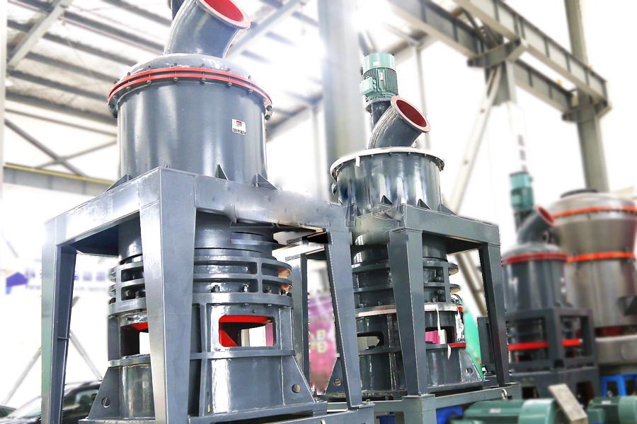
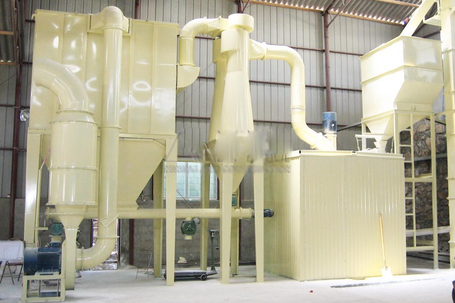

- Home >
- milling equipment >
- vertical roller mill operation

Construction waste crushing production line

Mobile construction waste crushing station for urban construction waste crushing.
vertical roller mill operation
High-pressure micro-grinding mainly by the host, blowers, ultra-fine analysis machine, the finished product cyclone powder, a bag filter and connecting duct piping and other components, according to user needs can be equipped with elevators, storage silos, control cabinet, to powder , crusher and other auxiliary equipment.
Applicable materials: feldspar, talc, barite, marble, limestone, carbon black, clay, kaolin, calcite, gypsum and the like.

Product Description: High-pressure micro-grinding mainly by the host, blowers, ultra-fine analysis machine, the finished product cyclone powder, a bag filter and connecting duct piping and other components, greater scope compared with the jet mill. Red Star has produced high-pressure micro-grinding small investment, high income advantage.
Product advantages
Advanced structure, good performance
Pressure micro-grinding having overlapping multi-pole sealed grinding device, good sealing performance. Compared with other similar mill, roller grinding pressure of the material under the influence of high pressure increase 800-1200Kg spring.
The scope of large, energy-efficient
High-pressure micro-grinding of feed size large, the average particle size of the material can reach a one-time <6.5um ultra-fine powder. High-pressure micro-grinding and jet mill compared to apply a wider range. High-pressure micro-grinding effect of dust fully meet the national dust discharge standard.
Energy-efficient, high-yield
Small investment, high returns. In the same yield and fineness of cases, the price is only one-eighth of the jet mill. In the same yield and fineness, the system energy consumption is only one-third of the jet mill.
Technical Parameters
|
Model Parameters |
Powder93 | Powder92 | Powder87 | Powder76 | Powder66 |
| Feed size（mm） | ≤25 | ≤25 | ≤20 | ≤20 | ≤15 |
| Finished size（mm） | 0.125-0.010 | 0.125-0.033 | 0.125-0.010 | 0.125-0.033 | 0.125-0.010 |
| Different materials fineness（t) | 0.8-12 | 0.6-10 | 0.4-8 | 0.3-6 | 0.2-4 |
| Center shaft speed（r/min） | 140 | 148 | 160 | 170 | 180 |
| Grinding ring diameter（mm） | 1006 | 973 | 907.5 | 850 | 725 |
| Roller diameter（mm） | 300 | 300 | 270 | 250 | 210 |
| Roller height（mm） | 160 | 160 | 150 | 150 | 150 |
| Host Motor | Y225M-8-30 | Y225M-8-22 | Y225M-8-22 | Y225S-8-18.5 | Y225M-8-15 |
| Fan motor | Y180M-2-22 | Y180L-4-22 | Y160L-4-18.5 | Y160L-4-15 | Y160L-4-11 |
| Motor analyzer | YCT180M-4A-4 | YCT180M-4A-4 | YCT180M-4A-4 | YCT160-4B-3 | YCT160-4B-3 |

vertical roller mill operation
After the material is crushed by the elevator into the storage bin, and then by vibrating feeder evenly into the grinding chamber, after the shovel blade into being crushed between the roller and rubbing grinding ring, fans will be blown into the grinding room, blowing the powder into the analysis machine, be winnowing, reach fineness and regrinding, qualified powder into the air the finished product cyclone powder collector, separated air is discharged from the discharge port finished products. Material containing some water, would produce a certain moisture grinding, and the entire pipeline due to the tight seal is not absolutely certain external causes gas is inhaled, the system circulating air volume increases, in order to ensure the mill work under negative pressure, the excess amount of wind after entering the baghouse purification into the atmosphere.
Leave Me A Message, Now
If you have any questions regarding equipment prices, production line configuration or other problems, you can send a message to us, we will contact you soon.